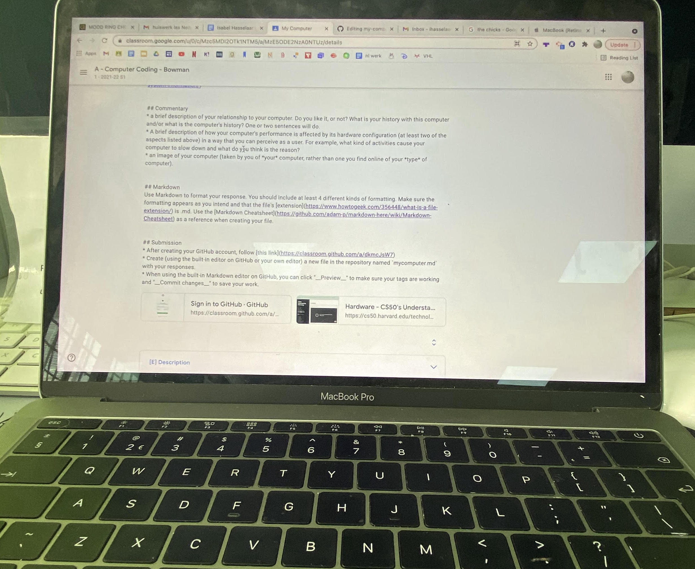

MacBook Pro 2017 (13-inch)
Apple macOS
CPU: Dual-Core Intel Core i5: 2,3 GHz
RAM: 8 GB
SD 121,02 GB
Wifi: 802.11 a/b/g/n/ac
Bluetooth: 4.2 (0x8)
Two USB-C Ports/Thunderbolt 3 ports and an Audio Jack
I first got this computer towards the end 2017 to use it for my 6th grade year. I have used this computer since and it has worked very well for me. I like the design of this MacBook and the way it operates.
Things that cause my computer to slow down are opening too many tabs at a time. This can use up a lot of memory. Additionally, keeping my computer open for too long also slows it down because it affects the battery life. Battery life also decreases when I charge my phone using my computer. Having too many files can take up a lot of storage and this will leave the computers startup disk with not enough free disk space. There are also things that can affect your RAM such as certain apps. These apps can cause your memory pressure to increase, therefore you should quit apps when you don't need it. To check memory pressure you can check the activities monitor.
